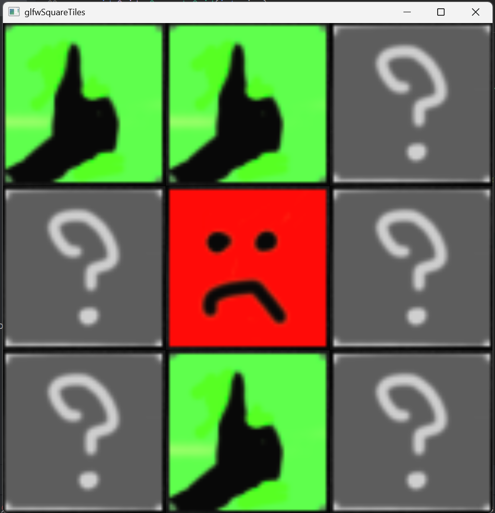

01
GLFW Memory-Tiles
Created during Introduction to C++, it's a weird course after I've already went through Introduction to Computer Graphics where C++ is required to implement OpenGL.
This project allowed me to experience working with GLFW's 2D Space and its window's Normalized Device Coordinates. The process of making those tiny squares are no less than the process of making a 3D cube in OpenGL's 3D space.
